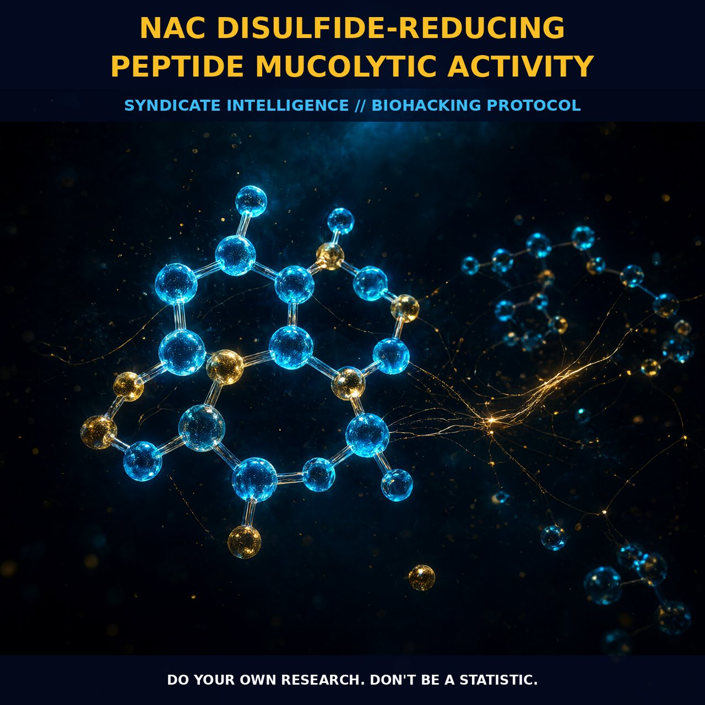

NAC Disulfide-Reducing Peptide Mucolytic Activity

MECHANICS
The conventional narrative frames N-acetylcysteine as a simple antioxidant, but the structural reality is that of a potent disulfide-reducing agent with profound mucolytic capabilities. The core driver here is the thiolate site within the NAC molecule, which possesses a strong reducing power due to its high pKa of approximately 9.51. This elevated basicity stabilizes the high electron density at the sulfur atom, making it a superior reductant compared to natural thiols like glutathione or cysteine. Specifically, the redox potential of the NAC thiol/disulfide pair is higher by 63 mV relative to the GSH/GSSG pair, allowing it to more efficiently break disulfide bonds in proteins.
This chemical property directly explains its mucolytic activity, as it targets the cross-linked mucous proteins that form the structural basis of thick mucus. By reducing these disulfide bonds, NAC disrupts ligand bonding and alters protein structures, effectively thinning the viscous matrix. The adjacent N-acetyl and carboxylate groups play a critical role in this process by further stabilizing the thiolate site, ensuring that the molecule remains an active reductant at physiological pH. This mechanistic distinction separates it from larger molecules that may struggle in sterically less accessible spaces, as NAC's small molecular size allows it to penetrate and act where others cannot.
BIOLOGICAL LEVERAGE
Beyond simple mucolysis, the reduction of disulfide bonds by NAC cascades into significant modulation of cellular signaling pathways and receptor function. This thiol-mediated restructuring has been shown to decrease angiotensin II receptor binding in vascular smooth muscle cells, suggesting a direct influence on cardiovascular tone and vascular health. Furthermore, NAC blocks tumor necrosis factor-induced signaling by lowering the cytokine affinity to its receptor, which implies a broad anti-inflammatory leverage through cytokine modulation.
The biological impact extends to intracellular dynamics, particularly regarding tubulin assembly and nuclear transport in neural tissues. Oxidative modification of tubulin by disulfide links can impair microtubule assembly, and NAC has been observed to restore tubulin dynamics in cultured neurons and fetal rat brain tissue. This restoration improves the nuclear transport of NF-κB, a key transcription factor, thereby influencing gene expression related to inflammation and oxidative stress. Additionally, NAC modifies the redox state of functional membrane proteins with exofacial SH groups critical for their activity, priming enzymes like c-Src to shift from the membrane into perinuclear endolysosomes for enhanced signaling efficiency.
TACTICAL IMPLEMENTATION
While NAC is widely recognized as a cysteine prodrug and the standard care for paracetamol intoxication, its application in biohacking contexts requires an understanding of its pharmacokinetic nuances. It serves primarily as a precursor for glutathione biosynthesis, maintaining intracellular thiol levels, though some evidence suggests that enhancement can be attributed to cysteine formed outside cells via N-deacetylation rather than direct penetration of free NAC alone. For systemic antioxidant support and disulfide reduction, oral administration is the most common route, yet it faces absorption challenges as neither free nor disulfide-bound NAC is always detected intracellularly in intestinal segments or bronchoalveolar lavage fluid after oral dosing.
To optimize bioavailability, esterified forms such as NAC ethyl ester have demonstrated dramatic increases in concentrations within red blood cells compared to standard NAC, suggesting that chemical modification can bypass certain absorption bottlenecks. In terms of radical scavenging, NAC reacts rapidly with hydroxyl radicals, nitrogen dioxide radicals, carbonate radicals, and thiyl radicals, providing immediate oxidative protection. However, its reaction with superoxide, hydrogen peroxide, and peroxynitrite is relatively slow, indicating that its primary power lies in disulfide reduction and radical interception rather than merely acting as a bulk scavenger of hydrogen peroxide. Practitioners should view NAC not just as an antioxidant pill, but as a structural modulator of protein connectivity and redox potential within the cell.
Do your own research. Don't be a statistic.
Prostar Life Hack
Always verify protocol biological leverage with baseline biometric tracking. Data is sovereignty.
[ AUTHOR: LEAD TECHNICAL RESEARCHER ]